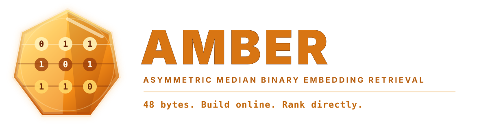
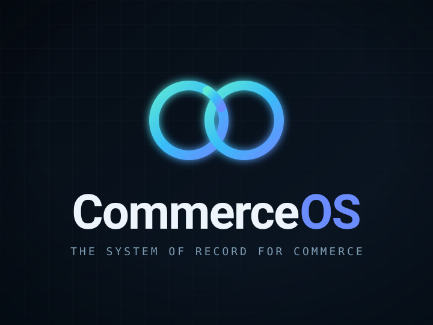

02Explicit contractName states, owners and failure paths.
03Smallest real systemCross every layer once.
04EvidenceProve the claim where it operates.
No magic. A suspicious amount of testing.
01 · Selected systems
From business problem to working proof.
Descriptions and measurements come from the current GitHub repositories. Source code and detailed documentation remain private.
Commerce intelligence01
DigitalWeaver
AI-native search and recommendations for e-commerce: semantic and visual retrieval, per-session taste, Stripe billing, quotas, WooCommerce, and an authorised operational interface. The current end-to-end proof is the local Docker gate.
31/31 browser journeys
14 services
multi-tenant
Retrieval core02

AMBER
A Go ranker that turns a 384-dimensional document embedding into a 48-byte code — with no document floats, codebooks, or corpus-trained state.
48 B / document
online append
atomic snapshots
Commerce platform03

CommerceOS
Server-owned commerce infrastructure with deterministic pricing and inventory, immutable records, controlled integrations, and provider-reconciled payment truth.
Go
Google Cloud
deny by default
Engineering quality04
N ≠ 1
agent-lenses
Independent review, planning and delegation across model families. Findings are reconciled against the code; dissent is preserved; a human keeps the final say.
618 sessions
3,175 accepted foreign findings
threshold-gated
02 · Method
Calm engineering for difficult systems.
01
Make truth boring.
Payments, inventory, identity and financial records belong to deterministic rules, not a persuasive model response.
02
Attach the evidence.
Useful automation shows its inputs, limits, degraded states and an audit trail that survives the demonstration.
03
Cross every layer once.
A small vertical result used by a person reveals more than a broad architecture admired from a safe distance.
03 · Contact
Have a difficult system?
The inbox is open — especially when the brief begins with “this should be simple”.